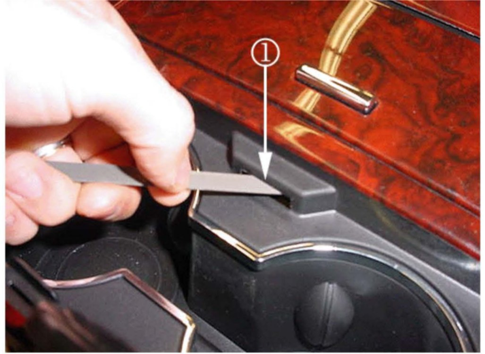
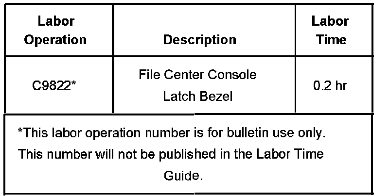

Interior - Center Console Cup Holder Door Hard to Close
Bulletin No.: 07-08-49-023Date: November 05, 2007
TECHNICAL
Subject:
Center Console Cup Holder Door Hard to Close or May Not Close (File Latch Bezel Slot)
Models:
2007-2008 Cadillac Escalade, Escalade ESV, Escalade EXT
Condition
Some customers may comment that the center console cup holder door is hard to close or may not close.
Cause
This condition may be due to excessive flash material left behind inside the latch bezel opening.
Correction
File the center console latch bezel slot following the steps below.
Verify the condition.
Fully open the cup holder door.

DO Not remove too much material from the latch bezel slot (1) or the door could rattle or even open while driving. Carefully run a small flat-bladed file into the top underside of the latch bezel slot (1) opening and remove the excessive material.
Continue to verify the cup holder door closing effort during the filing process until the door closes and the effort is acceptable.
Clean out any file shavings from the bezel assembly.
Verify that the condition has been corrected.
Warranty Information

For vehicles repaired under warranty, use the table.

Disclaimer